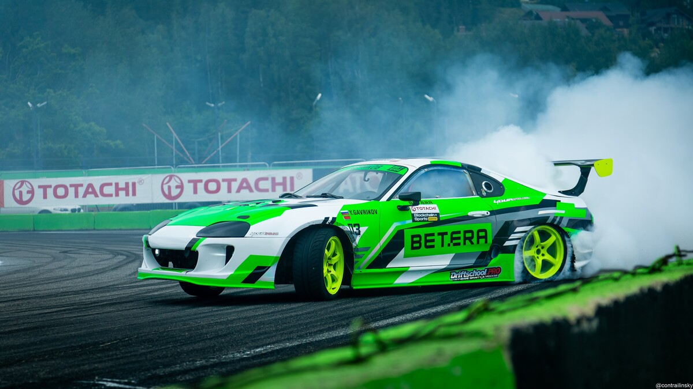
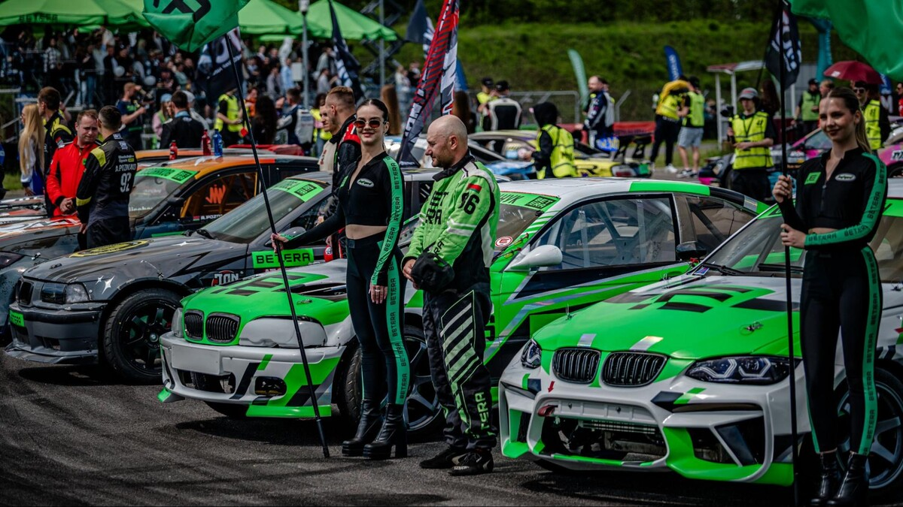
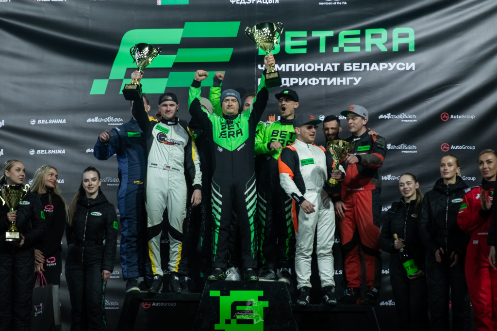
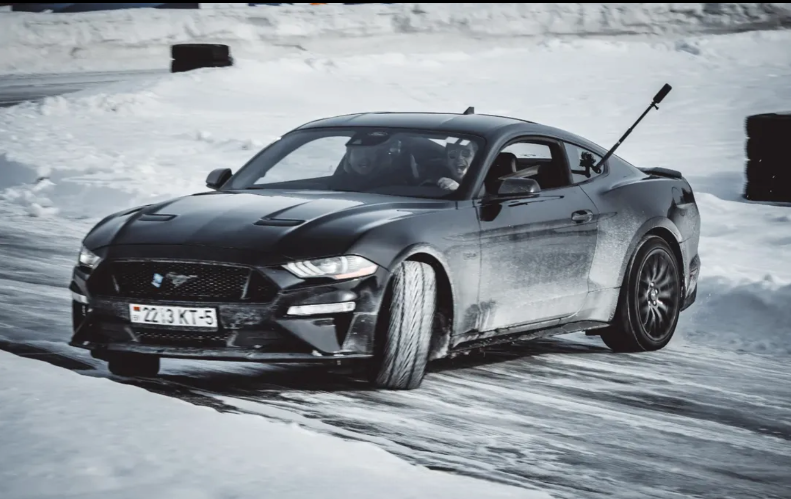
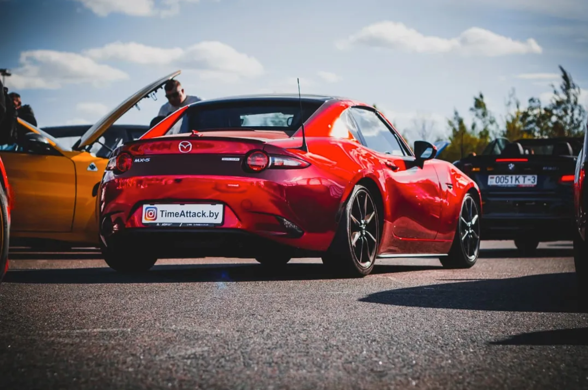
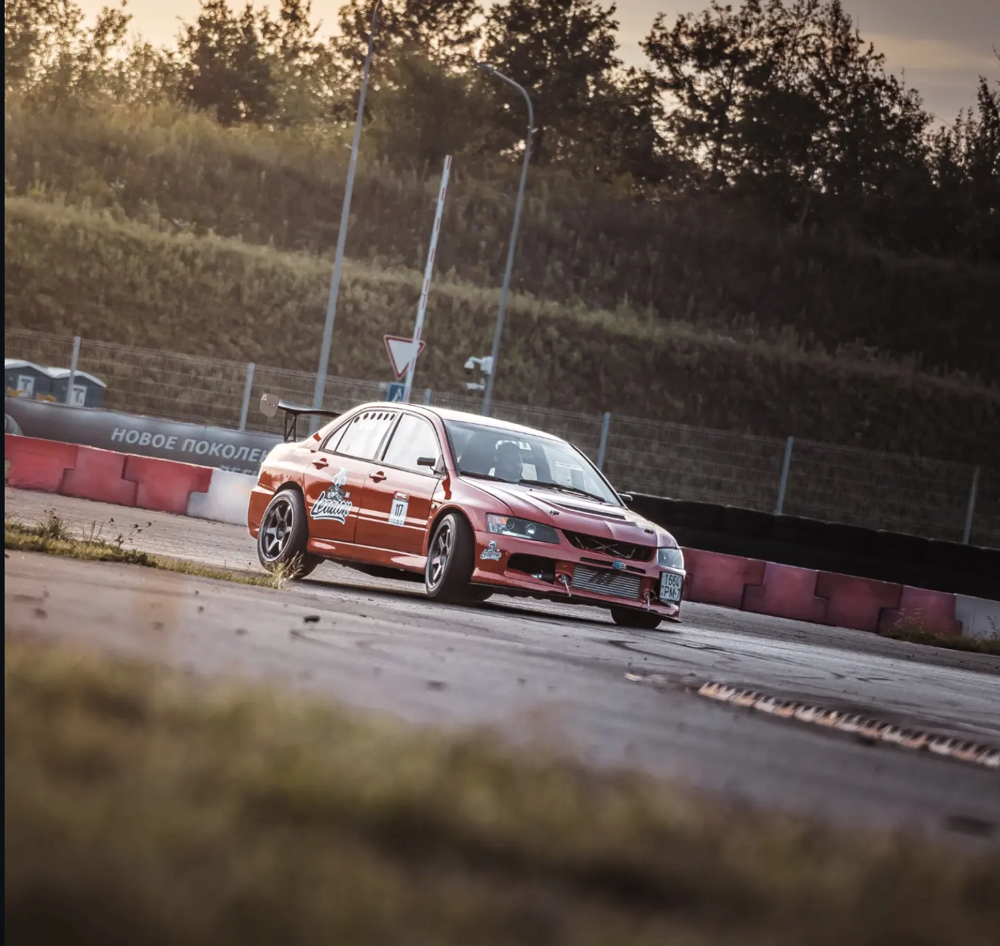
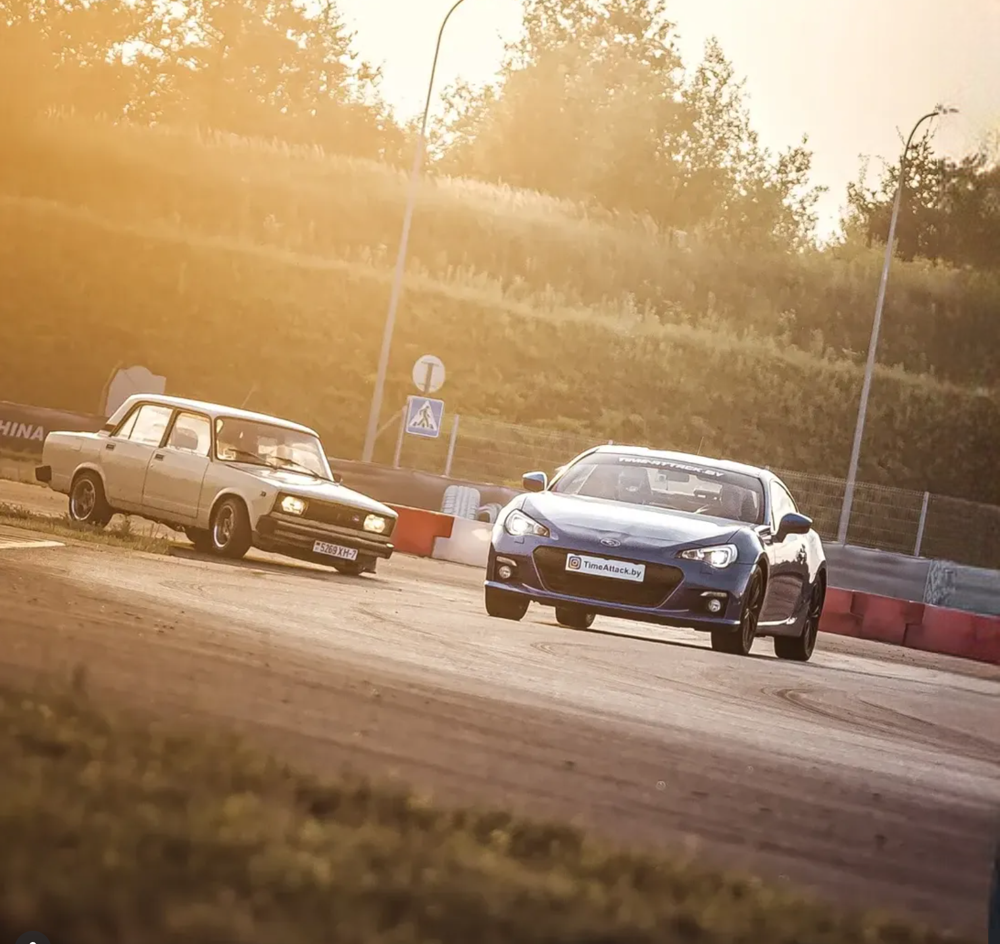

Must Watch
Медиа
Медиа
RaceManager
Видео от организаторов, командные истории и лучшие кадры с трассы.
Latest Videos
Видео команд и организаторов
 ▶
▶Хайлайты · Betera Drift
Лучшие моменты этапа: скорость, дым и парные заезды
Главные эпизоды гоночного уикенда в одном видео.
 ▶
▶Видео · Зрители
Дрифт Стайки глазами зрителей
 ▶
▶Видео · Паддок
Дрифт в Беларуси: как это проходит
 ▶
▶Тизер · Гродно
Betera Гран-При Гродно 2026
 ▶
▶Видео · Заезд
Дрифт: лучшие моменты заезда
 ▶
▶Видео · Команды
Командное видео из паддока
 ▶
▶Видео · Уикенд
Атмосфера гоночного уикенда
 ▶
▶Видео · Пилоты
Трек-день от команды 22RT
 ▶
▶Видео · Паддок
Подготовка автомобилей к старту
 ▶
▶Видео · Трасса
Яркие кадры с трассы


Track Gallery
Лучшие кадры с трека









RaceManager Partners